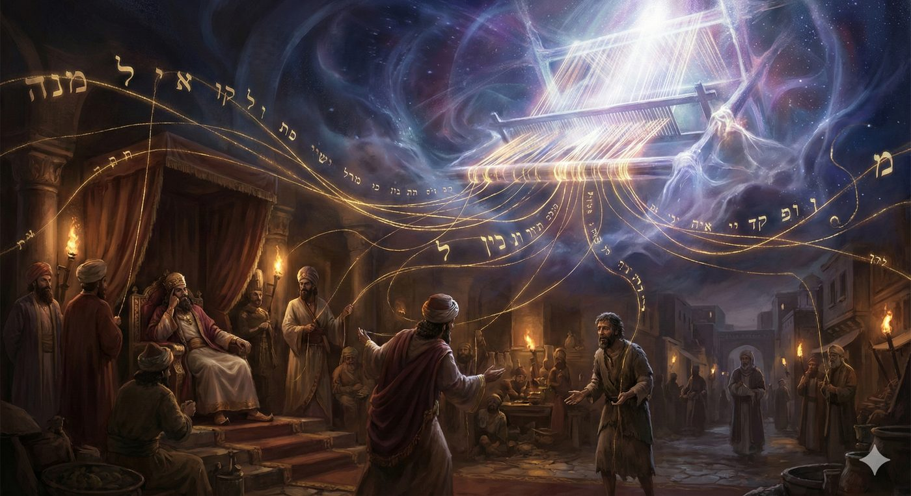
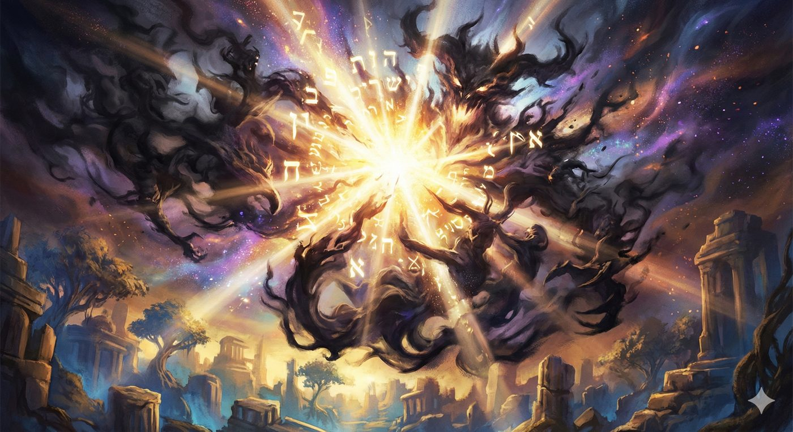
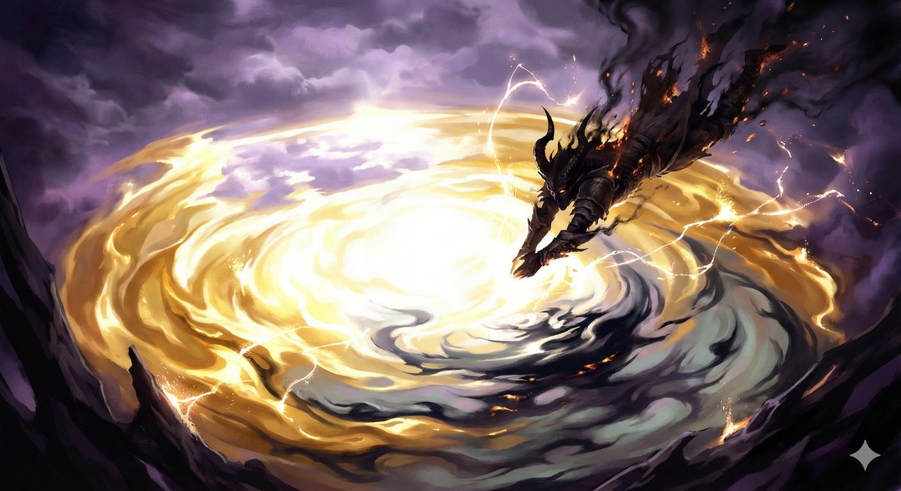
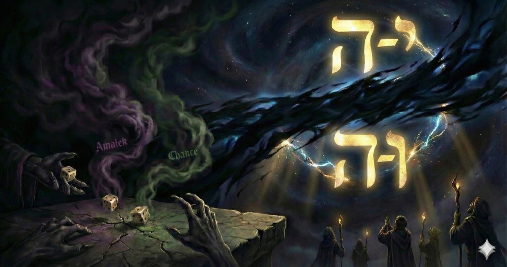
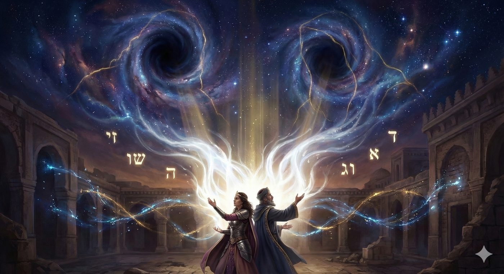

Tetsavé - Zahor - Pourim - 5786
Lorsque les noms s’effacent
Les noms effacés
Cette année, la rencontre de la paracha Tetsavé, de Chabbat Zah’or et de la fête de Pourim compose un triptyque spirituel fascinant. Ces trois moments partagent un point commun frappant : l'effacement des noms. Dans Tetsavé, pour la seule fois depuis sa naissance et jusqu’à la fin du livre de Bamidbar, le nom de Moché disparaît. À Pourim, nous lisons l’histoire des Juifs de Perse dans une Méguila où le Nom de D. ne figure pas une seule fois. Et ce Chabbat Zah’or, la Torah nous ordonne de nous souvenir de l'attaque d'Amalek précisément pour... en effacer la mémoire.
Cette coïncidence est d’autant plus marquante que cette paracha appartient au corpus de Chemot, qui est comme son nom l’indique le livre des noms. Chemot s’ouvre sur les noms des Bnei Israël descendus en exil chez Pharaon et déploie peu à peu les différents noms de D., depuis Havaya, le Nom de la providence transcendante, jusqu’à Elokim, le Nom de la présence dans l’ordre naturel et législateur du monde, en passant par Ad -naï, Nom de la Sheh’ina, la présence divine, qui réside au milieu d'Israël au sein du Michkan.
Ainsi que nous l'avons mis en évidence, le livre de Chemot révèle que la multiplicité des modes opératoires de D.ieu, symbolisée par Ses Noms, a toujours un objectif didactique : s'ajuster au degré de compréhension et de savoir des Bnei Israël.
La Méguila d'Esther, à l’inverse, raconte un renversement de situation dissimulé sous l'apparence d'un récit politique et amoureux. C'est une suite de hasards et d’opportunités où D. semble absent et dont le texte scripturaire exclut la présence de Ses Noms.
Amalek, enfin, incarne le doute profond qui ronge le cœur d'Israël sur la présence de D. dans ce monde où Il s’est voilée, à la fois dans les sphères supérieures (allusion aux lettres youd et hé du Tétragramme) et à la fois dans les strates inférieures de l’espace-temps (allusion à vav et hé). Tant que le nom d’Amalek n’est pas effacé, enseigne la Torah, le Nom de D.ieu reste incomplet… dans la conscience de l’homme.
Trois textes, trois noms effacés, et qui révèlent paradoxalement la présence la plus profonde de la divinité et la pleine responsabilité de l'homme.
Avec l’aide du Ciel et de nos maîtres, le Mei Hashiloah de Radzyn, le Beth Yaakov de Leiner et le Sfat Emet, nous allons voir que ces absences ne sont pas de simples styles littéraires mais sont la trace d’une stratégie divine volontaire de retrait (Tsimtsoum). Ces voilements ouvrent un espace où l’homme, confronté au doute et au silence apparent du Ciel, peut conquérir par son propre effort la révélation d’un point de vérité situé au-delà des mots ad-vé-lo-yada au point où la connaissance s'arrête. Effacer Amalek, c’est alors éradiquer la confusion intérieure qui empêche de reconnaître cette présence cachée, condition sine qua non de toute rencontre authentique avec D.ieu.
Tetsavé : lorsque Moché s’efface
"Efface-moi de Ton Livre" : La Malédiction Conditionnelle
Depuis son apparition au début de Chemot jusqu'à la fin de Bamidbar, Tetsavé est la seule portion de la Torah lue hebdomadairement (hormis ses discours de récapitulation dans Devarim) où le nom de Moché ne figure pas, comme le fait observer le Baal HaTourim sur Chemot 27:20 et 32:32. Ainsi la traditionnelle phrase introductive “Et D.ieu parla à Moché en ces termes” laisse place à un laconique “Et maintenant tu ordonneras”). Pour autant, cet effacement n'est pas fortuit mais constitue la résonance textuelle d'un dévouement prophétique absolu.
La source principale de cet effacement réside dans la vibrante plaidoirie de Moché après la faute du Veau d'Or. Dans un élan de solidarité absolue avec son peuple, le prophète déclare à D.ieu : « Et maintenant, si Tu pardonnes leur péché... sinon, efface-moi, je Te prie, de Ton livre que Tu as écrit » (Exode 32:32). Bien que le pardon divin ait été accordé, la tradition rabbinique stipule que la parole d'un Sage s'accomplit toujours, même lorsqu'elle est conditionnelle.
La Connexion Chronologique : Le 7 Adar
Cette absence acquiert une gravité supplémentaire à la lumière du calendrier. Le Gaon de Vilna note que Tetsavé est presque toujours lue aux alentours du 7 Adar, date anniversaire de la disparition de Moché. L'effacement de son nom dans cette paracha opère alors comme un « deuil anticipé » dans le texte. Au moment même où la communauté juive commémore la fin de l'ère mosaïque, elle lit une portion de la Torah où le prophète est déjà absent, préparant le peuple à une existence sans son maître suprême. L'effacement dans Tetsavé est ainsi relu comme l'accomplissement de ce "vœu d'abnégation". En disparaissant des instructions pour la Kehouna, Moché démontre une humilité qui confine à l'annulation de soi.
Cependant, cet effacement est paradoxalement une forme de présence sublimée, la paracha commence par les mots Ve-ata Tetzaveh (« Et toi, tu ordonneras ») et Moché est appelé par un pronom qui dans la lecture hassidique représente son essence. Il existe en effet une différence fondamentale entre l'usage d'un « nom » pour désigner quelqu'un et l'emploi d'un « pronom ». Alors que le nom agit comme une étiquette extérieure, le pronom, lui, touche à la dimension la plus profonde de l'être. Paradoxalement, l'occultation du nom intensifie en réalité sa présence, manifestée sous une forme plus intérieure que les simples vêtements ou appellations. Ainsi, l'ordre divin touche si profondément l'essence de Moché que son nom n'est plus nécessaire.
Humilité et transmission : Le Transfert vers Aaron
Cet effacement éclaire également la relation entre Moché et son frère Aharon. Tetsavé se concentre presque exclusivement sur l'institution du sacerdoce et les vêtements d'Aaron. À l'origine, Moché devait lui-même assumer la fonction de Cohen Gadol, mais suite à ses hésitations face au Buisson Ardent (ainsi que le rapporte Rachi), cet honneur a été transféré à Aaron. Le Tur HaAroch explique que la Torah a omis le nom de Moché pour lui épargner tout sentiment de tristesse au moment de consacrer son frère à une fonction qui lui était initialement destinée. Par une délicatesse infinie, Moché agit dans l'anonymat pour que toute la gloire soit portée sur Aaron et ses fils. Cet effacement devient un modèle absolu de leadership désintéressé, où le guide s'efface pour permettre l’épanouissement Et Tetsavé met en scène ce transfert : le maître se retire pour qu'Aaron devienne la figure explicite de la Avoda, du service Divin.
Meguila Esther : le Nom de D.ieu effacé
La Méguila d'Esther se distingue dans le canon biblique par l'absence totale des noms de D.ieu. Ce silence n'est pas un oubli historique, mais une stratégie littéraire et spirituelle visant à refléter la condition du peuple juif en diaspora. Dans un monde où les miracles manifestes ont cessé (car la prophétie s’arrête concomitamment à l’histoire de Pourim, et le temple a été détruit depuis près de 70 ans), le récit d'Esther propose une vision de la divinité qui opère derrière le voile des coïncidences politiques.
Hester Panim et l'Identité de la Diaspora
L'absence du nom Divin est intrinsèquement liée au concept de Hester Panim, la dissimulation de la face. Le Talmud (Houllin 139b) établit un lien direct entre le nom d'Esther et l'avertissement de Dvarim (31:18) : « Et Moi, Je cacherai (astir) assurément Ma face en ce jour-là » lors de l’échange entre D.ieu et Moché à la suite de la faute du veau d’or (le même où Moché demande à être effacé) . Cette période correspond à l'exil perse où la présence de D.ieu n'y est plus annoncée par les prophètes ni abritée par le Beth Hamikdach, mais doit être discernée à travers l'obscurité de l'incertitude historique.
Les noms mêmes des protagonistes, Esther et Mordeh’aï, reflètent cette dualité. Si leur consonance évoque les divinités perses Ishtar et Mardouh, soulignant le vertige de l'assimilation, leurs étymologies hébraïques nous ramènent au sacré. Esther s'enracine dans les lettres h-s-t-r (le secret, le caché), tandis que Mordeh’aï est associé par nos Sages à Mor Deror, la myrrhe pure qui parfumait le Beth Hamikdach.
Le récit nous interroge alors sans cesse : l'héroïne est-elle Hadassah, le myrte symbolisant la droiture juive, ou Esther, la reine perse dont l'origine est dissimulée ? Cette ambivalence incarne le défi absolu de la diaspora : Comment maintenir une identité religieuse inébranlable alors que D.ieu Lui-même semble s'être retiré de la scène ?

Car dans la Méguila, les banquets somptueux, les intrigues de cour et les décrets capricieux du roi nous enseignent une leçon magistrale : D.ieu n’intervient plus par des miracles de rupture qui brisent les lois de la nature, mais par le voile subtil de la Providence. L'arène politique et la contingence historique deviennent le vêtement du Divin. La survie d'Israël dépend désormais d’une succession de “hasards” intimement mêlée à des initiatives humaines d'une audace inouïe. La reine Vachti est destituée et mise à mort pour un refus irrationnel, un souverain esseulé s'éprend d'une jeune captive anonyme qui, guidée par la clairvoyance de son oncle Mordeh’aï, modifie son nom et voile son identité.
Le salut se tisse alors dans l'ombre des coïncidences. Mordeh’aï déjoue l’assassinat du roi parce qu'il surprend, par un prétendu "hasard", le complot des gardes Bigtan et Terech. Plus tard, l'insomnie providentielle du souverain coïncide, à la minute près, avec l'arrivée d'Haman venu réclamer la tête du juste, et qui devra au contraire sur ordre du roi, l’habiller avec les habits du roi et le déplacer sur le cheval du roi dans toute la ville.
Mais lorsque tombe le funeste décret d'extermination, le réveil spirituel imposé par les protagonistes est total. Mordeh'aï ne s'en remet pas à l'attente passive d'un prodige céleste : il déchire ses vêtements en signe de deuil, enjoint le peuple à une Techouva radicale, et bouscule les hésitations d'Esther en la confrontant brutalement à sa destinée « Qui sait si ce n'est pas pour une époque comme celle-ci que tu es parvenue à la royauté ? ».
L’initiative humaine atteint alors son apogée. La jeune femme effacée se métamorphose en un leader absolu et prend le commandement. Sur son ordre, le peuple tout entier se rassemble pour prier et jeûner pendant trois jours consécutifs. Fait théologique d'une puissance vertigineuse, ce jeûne intervient précisément au moment de Pessah. Esther prend alors l'immense responsabilité de suspendre la mitsva sacrée de la consommation de la matsa et du vin, qui sont les symboles éclatants des miracles de la Sortie d'Égypte. Le message qu'elle adresse au Ciel est bouleversant : l'ère des mers qui s'ouvrent et des plaies qui frappent l'égypte est révolue.
Pour arracher le salut dans la nuit de l'exil Perse, il ne faut plus s'appuyer sur les prodiges passés, mais faire preuve d'un sacrifice personnel absolu (de Messirout Nefech). Esther renonce à la célébration de la liberté d'hier pour forger la délivrance de demain, cette fois dans le silence, la faim, et l'engagement total de son propre être1.
Pourtant, et c’est tout le drame de l’homme qui navigue entre un libre choix apparent qui l’oblige à agir et une providence absolue, cette absence n'est qu'illusoire. Les sages ont identifié de nombreuses allusions divines dans les acrostiches du texte de la Meguila. Par exemple, l'expression « un autre endroit » (makom ah’er) d'où proviendra la délivrance (Esther 4:14), est interprétée par le Midrash comme une référence à Ha-Makom (Le lieu, L'Omniprésent qui est un nom de D.ieu). L'absence de Noms devient donc une invitation majestueuse faite au lecteur à chercher la main de D.ieu derrière les rouages de l’histoire.
La pensée hassidique parachève cette lecture. Le Mei Hashiloah enseigne que le retrait divin est la préparation même de la révélation. D.ieu se retire pour susciter chez l'homme un cri plus authentique et profond. Car le silence de Pourim forge l'écrin de la délivrance, tout comme le silence de Moché dans Tetsavé préparait la grandeur du service sacerdotal.
Nous lisons Pourim avec la conviction intime que ces hasards sont les lettres invisibles de la Providence. On retrouve ici la même logique pédagogique que l’effacement de Moché dans la paracha de Tetsavé : le prophète se retire pour asseoir le sacerdoce du temple, et D.ieu se retire du texte pour hisser le peuple au rang d'acteur de l'Histoire.
Amalek : le vertige du doute
Mais cette lecture providentielle du monde se heurte à une force antagoniste redoutable : Amalek.
Parachat Zah’or : L'obligation d'effacer Amalek
L'écho mystérieux entre l'absence du nom de D.ieu dans la Méguila d’Esther et le retrait du nom de Moché dans la paracha Tetsavé trouve son point d'orgue lors de la lecture de la paracha Zachor dont l’écoute constitue une obligation pour chaque homme (et selon certains décisionnaires chaque femme) le chabat qui précede Pourim.
“Souviens-toi de ce que t’a fait Amalek, en chemin, lors de votre sortie d’Égypte ; comme il t’a surpris en chemin et a poursuivi tous tes faibles par-derrière, alors que tu étais fatigué, à bout de forces et lui ne craignait pas D. » (Devarim, 25:17-18)”
C'est dans ce passage que la Torah scelle notre rapport à cet ennemi ontologique au travers d'un triptyque d'injonctions. La première s'érige en obligation de faire, une mitsva positive : se souvenir perpétuellement de l'agression, ainsi qu'il est ordonné : « Souviens-toi de ce que te fit Amalek sur le chemin, lors de votre sortie d’Égypte » (Dt 25, 17). La deuxième s'impose comme une obligation de ne pas faire, une mitsva négative, dressant une garde farouche contre l'amnésie : « N’oublie pas » (ibid. 19). Enfin, la troisième prescription, de nouveau positive, vient parachever cette exigence en ordonnant d'éradiquer cette lignée de la surface de la terre : « Alors, quand l’Éternel ton Dieu t’aura délivré de tous tes ennemis alentour, dans le pays que l’Éternel ton Dieu te donne en possession héréditaire, tu effaceras le souvenir d’Amalek de dessous le ciel » (ibid.).
C'est au creux de ces trois commandements que culmine l'injonction vertigineuse : se souvenir pour effacer. Comme nous allons le voir, ce paradoxe existentiel et spirituel constitue le préambule indispensable à la lumière de Pourim.
Haman l'Agagite : L'archétype du mal
Le lien généalogique et idéologique est explicite, Haman le premier ministre d’Hah’achveroch est décrit comme un « Agagite », descendant d'Agag, le roi des Amalécites que le premier roi juif Saül n'avait pas réussi à éliminer totalement.
La première apparition d'Amalek survient à Rephidim (Chemot 17:8-16), à un moment de bascule tragique. Elle fait immédiatement suite à la querelle de Massa et Meriva, où le peuple, assoiffé, a osé proférer la plus terrible des interrogations métaphysiques : « D.ieu est-Il au milieu de nous, oui ou non ? » (Chemot 17:7). Après les prodiges de l'Égypte, l'ouverture de la mer et la manne céleste, cette question résonne comme un effondrement de la conscience des Bnei israel. Et c'est précisément cette faille spirituelle, cette perte soudaine de la certitude providentielle, qui agit comme un appel d'air et déclenche l'assaut d'Amalek, car l'ennemi ne frappe jamais par hasard, il s'engouffre dans la béance laissée par l'infestation du doute.

Le Midrash Tanhouma illustre cette mécanique intime par une parabole (mashal) foudroyante. Un père avance sur un chemin périlleux, portant son fils sur ses épaules pour le protéger de tous les dangers. En chemin, l'enfant aperçoit un passant et lui demande naïvement : « N'aurais-tu pas vu mon père ? » Saisi d'indignation face à cette incroyable cécité, le père s'écrie : « Tu es sur mes épaules, je te porte, je te protège de tout, et tu demandes où je suis ? » Il dépose alors l'enfant à terre, et immédiatement, un chien féroce surgit et le mord. Ce chien, nous disent les sages, n’est autre qu’Amalek. Ce mashal magistral nous enseigne qu'Amalek n'est pas la cause de notre vulnérabilité, mais son symptôme éclatant. Dès l'instant où Israël cesse de ressentir l'étreinte protectrice du Créateur et s'interroge avec cynisme sur Sa présence, la morsure de l’antisémitisme reprend ses droits.
Sur la scène de Chemot, cette attaque revêt une dimension de sacrilège cosmique. Après les dix plaies et le miracle de la mer Rouge, une terreur mystique paralysait les peuples de la région. Israël était perçu comme intouchable, et Amalek va réaliser la première brèche de cette crainte révérencielle. Rachi (sur Devarim 25:18) capture cette folie suicidaire à travers une métaphore inoubliable : celle d'un bain bouillant dans lequel nul n'ose plonger. Soudain, un insensé s'y précipite. Certes, il s'ébouillante et en ressort atrocement brûlé, mais il a refroidi l'eau et a prouvé aux yeux de tous qu'il était possible d'y entrer. Amalek est cet insensé, son attaque n'a aucune rationalité territoriale ou économique, elle est motivée par une haine pure de la transcendance divine. Amalek accepte de se briser sur le bouclier d'Israël dans l'unique but de "refroidir" l'aura miraculeuse du peuple saint, de désacraliser son existence, et de le ramener à la trivialité cruelle du hasard et des guerres humaines.

La gematria d’Amalek (240) est celle du mot Safek (le doute) démontrant qu’Amalek est avant tout la voix intérieure qui nous fait douter, relativise la avoda, et nie la valeur de la foi et des mitsvot. Il n'est ainsi pas seulement un ennemi historique, mais la représentation physique et spirituelle du doute. En attaquant Israël dès la sortie d'Égypte, il tente d'insinuer que les miracles dont ils ont bénéficiés n'étaient régis que par le hasard et le chaos.
Nos sages établissent à cet égard un lien mystique profond et puissant entre Amalek et l'incomplétude du Nom divin. Amalek vient briser le Tétragramme en séparant les sphères supérieures de la divinité, les lettres Youd et Hé la sagesse et le discernement, de notre réalité matérielle et spatio-temporelle, les lettres Vav et Hé les 7 emanations inférieures, en attaquant le daat, la connaissance de D.ieu qui fait le lien entre le haut et le bas.
L'insinuation d'Amalek est ainsi terrible : D.ieu est peut-être là-haut, mais Il ne s'occuperait pas de ce qui se passe ici-bas (has ve-chalalom), car ici le hasard règne. C'est pourquoi la Torah affirme que "tant que le nom d’Amalek n’est pas effacé, le Nom de D. reste incomplet". Éradiquer Amalek, c'est ainsi réparer cette fracture, permettre au Nom divin de se révéler dans sa plénitude (cf. Rabbénou Behayé sur Chemot 17:16) et restaurer la certitude que la Providence divine agit jusque dans les détails les plus infimes de notre monde.
Cette dimension trouve un écho psychologique majeur chez les maîtres hassidiques. Le Beit Yaakov apporte un éclairage essentiel : Amalek ne se contente pas de faire douter de D., il instille la dévalorisation de soi. Il incarne la voix du désespoir existentiel, et la mitsva de se souvenir d'Amalek (Zachor) consiste dès lors, à rester conscient de cette voix intérieure destructrice pour la démasquer, en y opposant la dignité humaine affirmée au Sinaï et renouvelée librement à Pourim (comme nous allons le voir en fin de chiour).

L'obligation d'effacer Amalek est alors une lutte contre cette vision d’un monde "aléatoire" soumis au chaos et aux hasards. Dans la Méguila, alors que Haman joue aux dés et s'appuie sur le Pour (le sort) pour fixer la date du massacre, il agit comme l’héritier d'Amalek, confiant dans le hasard et refusant la présence de D.ieu dans ce monde. L'effacement de son nom lors de la lecture de la Méguila (symbolisé par le bruit des crécelles) est dès lors une sorte de mise en pratique de la mitsva de Zah’or : effacer le nom de celui qui nous fait douter via le silence assourdissant de la mitsva d’écoute de la Meguila.
C'est ici que se révèle la mécanique intime de notre triptyque et il nous faut opposer deux types d'effacement. D'un côté, l'effacement "positif" de Moché et D.ieu dans Tetsavé et Pourim : le retrait de D.ieu et de Moché est un acte d'amour pédagogique, un espace laissé à l'homme pour grandir. De l'autre, l'effacement "négatif" d'Amalek : le Doute observe ce retrait divin et nous murmure que l'absence des preuves est la preuve de l'absence. Amalek utilise alors le voilement des agissements de D.ieu pour nous faire croire au hasard absolu.
Dès lors, effacer Amalek devient la condition préalable pour lire la Méguila correctement. Car il faut d'abord effacer la voix cynique en nous (Zah’or) pour être capable de déceler la signature de D.ieu précisément là où Il s’est caché, dans les “hasards” de Pourim.
S’effacer pour libérer
La coercition du Sinaï : L’acceptation forcée
Le Talmud (traité Chabbat 88a) souligne qu'au Sinaï, D.ieu a « renversé la montagne sur eux comme une cuve », les forçant à accepter la Torah sous peine de mort, et de retour du monde au Tohu-Bohu. Dans le contexte des miracles de Chemot, la liberté de choix était limitée par l'évidence écrasante de la puissance divine. Un peuple qui vient de voir la mer se fendre et les plaies s’abattre sur l’Egypte, ne peut guère nier l'autorité de son libérateur.
Pour autant, même si cette "coercition" majestueuse était nécessaire à la naissance de la nation, comme le fait remarquer le sage du Talmud Rava, elle posait un problème théologique majeur car une relation bâtie sur la force ne peut être authentiquement éthique et suffisamment solide.
Rava nous précise alors que « Si c'est ainsi, il y a là une excuse sérieuse (Moda'a raba) pour ne pas observer la Torah [puisqu'elle a été imposée par la force et l'intimidation]. » Mais Rava conclut aussitôt : « Malgré cela, ils l'ont de nouveau acceptée de leur plein gré à l'époque d'Assuérus, comme il est écrit (Esther 9:27) : "Les Juifs établirent et acceptèrent sur eux", ils ont établi de leur plein gré ce qu'ils avaient déjà accepté sous la contrainte. »
Le Modèle de Pourim : L'Acceptation Volontaire
C'est ici que la Méguila d'Esther intervient comme le remède à la nature coercitive du Sinaï. Rava affirme que lors de l'époque d’Hah’achveroch, les Juifs ont « de nouveau accepté la Torah, mais de leur plein gré ».
Le fait que ce renouvellement se produise dans un texte où D. est absent est fondamental, c'est précisément parce que D. est silencieux, que le prophète et maître Moché est absent et que le danger physique d’Amalek imminent, que la fidélité d'Israël devient un acte de pure liberté.
C’est sevré de miracles, que l'homme prend ses responsabilités, lorsque l'initiative humaine, représentée par le jeûne du peuple, le courage d'Esther et la perplexité de Mordeh’ai, succède à l'intervention descendante du Sinaï pour établir pleinement la connaissance du créateur dans le peuple.

L’effacement comme condition nécessaire à la révélation
Pour appréhender l'effacement dans sa globalité, il convient de définir la fonction secrète des noms. Dans la pensée mystique, un nom n'est pas une étiquette arbitraire, mais un réceptacle (un Keli) calibré pour contenir et moduler une fréquence spécifique de la Lumière Infinie (Ein Sof). Chaque Nom de Dieu, qu'il s'agisse de Havaya, Elokim ou Shad-dai, représente un mode opératoire particulier de la divinité dans les mondes créés. Chaque nom personnel, biblique ou non, représente la mission et les forces d’une personne, dans sa capacité à créer le réceptacle de lumière qui lui est dévolue.
Le concept de Tsimtsoum, tel qu' élaboré par l'école du Arizal, postule que la Lumière Infinie a dû se contracter pour laisser un "espace vacant" (Makom Panoui) où la finitude pourrait exister. L'effacement d'un nom dans le texte fonctionne dès lors comme un Tsimtsoum : en retirant le "vêtement" nominal, le Créateur crée un vide qui force l'homme à devenir un partenaire actif de la révélation. Ce retrait est la condition sine-qua-non du Tikoun, de la réparation des mondes, car il permet à la conscience humaine de passer d'une réception passive de la lumière à une conquête active et consciente de la vérité.
Il me semble que ce lien se noue dans la rencontre entre le cri de Moché « Emḥeh-ni » (אֶמְחֵנִי - Efface-moi), et l'ordre du Timḥé (תִּמְחֶה - Tu effaceras Amalek). Le mot Emet (אמת) devient alors le sceau de cette dynamique : le Aleph de l'abnégation de Moché (Emḥeh-ni) s'unit au Tav de l'effacement du doute (Timḥé), avec Moché (Mem) pour pivot. Cette alchimie révèle que la Vérité divine ne réside pas dans ce qui est nommé avec éclat, mais dans ce qui surgit du vide une fois l'ego et le doute évacués.
C’est là que l’effacement des doutes, d’Amalek, rejoint la conscience de la présence de D.ieu. Le premier principe du code de la loi juive nous rappelle, par le passouk « Chiviti Hachem lenégdi tamid », que la Présence ne se révèle que dans la vacuité de l'ego.
En effaçant le « moi » (le retrait volontaire de Moché) et le « hasard » (l'illusion d'Amalek), nous libérons l'espace nécessaire au déploiement de l'Infini. Il ne reste alors que la Présence permanente : le Tamid. Cette continuité fait écho à la mitsva du Ner Tamid qui ouvre la paracha de Tetsavé, la flamme perpétuelle qui brûle non pas par la matière, mais dans l'espace purifié de toute interférence humaine, voir pour aller plus loin.
Cette année, la rencontre de Tetsavé et de Zah’or rend ce message d'autant plus puissant : la préparation à Pourim consiste à reconnaître que, même dans le silence et l'absence apparente de leadership messianique, la responsabilité de porter la flamme incombe à chacun. L'effacement de Moché annonce sa fin physique, mais le commandement "Ve-ata" (« Et toi ») s'adresse à tout Israël pour que le récit biblique puisse passer de la Révélation éclatante du Sinaï au courage d’une reine risquant sa vie dans l’intimité d’un roi impie.
L'absence des noms sacrés vient alors graver une vérité ultime : la présence la plus réelle n'est pas celle qui est nommée, mais celle qui est vécue. Sur le plan spirituel et pratique, cela nous demande de relire notre propre histoire, de combattre activement l'Amalek intérieur (le désespoir, le doute froid), et d'utiliser l'étude, les mitsvot, la tefila et les actes de bonté (la Tsedaka, les Michloah Manot) pour reconstituer le Nom de D. dans notre quotidien, en Le cherchant partout, tout le temps.
שִׁוִּיתִי ה' לְנֶגְדִּי תָמִיד.. « J’ai placé Hachem devant moi en permanence (Tamid)... » Tehilim (16:8)
Ye-hi Ratson, puisses être la Volonté du Ciel que cette quête de vérité, et que notre clairvoyance restaurée hâte l'aube de la Rédemption absolue
Chabat Chalom !
 L’idée de la semaine
L’idée de la semaine
L'effacement du maître, le voilement de D.ieu, n'est jamais un abandon, mais la création d'un espace pour l'autonomie spirituelle.
En disparaissant de Tetsavé, Moché laisse la place au sacerdoce d'Aaron et à la Avoda des bnei Israël, et enseigne que le véritable leader est celui qui rend l'édifice résilient sans sa présence physique. En cryptant Son Nom dans les hasards de la Meguila, D.ieu permet aux Juifs de passer du statut de « serviteurs éblouis » au Sinaï, à celui de « partenaires de l'Alliance ». La recherche de D.ieu devient alors un choix courageux dans l'obscurité là où les dangers d’Aman / d’Amalek / de l’Iran nous font douter de la présence d’un plan divin précis et millimétrée et de l’omniscience du Créateur. Car la joie de Pourim est inaccessible tant que plane l'ombre du doute, et ce n'est qu'en broyant la thèse du doute (Zah’or) que la lumière de la Providence peut irradier le réel.
 Synthèse du Chiour
Synthèse du Chiour
Tetsavé - Zahor - Pourim 5786 : Lorsque les noms s’effacent
Cette année, la rencontre de la paracha Tetsavé, du Chabbat Zah’or et de Pourim compose un triptyque spirituel fascinant où l'effacement des noms devient le moteur de la révélation. Mais ces effacements ne sont pas des manques, mais une stratégie divine de retrait (Tsimtsoum) ouvrant un espace où l'homme, confronté au silence apparent du Ciel, peut conquérir sa propre lumière par un effort de recherche de la vérité situé au-delà des mots.
L'absence notable du nom de Moché dans Tetsavé est la résonance textuelle de son dévouement absolu lors de la faute du Veau d'Or, lorsqu'il demande à être effacé du Livre pour sauver son peuple. Ce "deuil anticipé" coïncide avec le 7 Adar, date anniversaire de sa disparition, préparant Israël à une existence sans son maître. Pourtant, cet effacement est une présence sublimée : en s'adressant à lui par le pronom « Toi » (Ve-ata), Dieu touche à l'essence profonde de Moché, au-delà de l'étiquette extérieure du nom. Par cette humilité radicale, le guide se retire pour que s'élève le service collectif dirigé par son frère Aaron.
L'absence totale de noms divins dans la Méguila reflète la condition de la diaspora sous le signe du Hester Panim (la dissimulation de la Face). Dans ce monde où les miracles de rupture ont cessé, la divinité opère derrière le vêtement de la contingence politique et des "hasards" de cour. Esther, dont le nom évoque le secret, se métamorphose en leader en prenant l'initiative humaine suprême : elle suspend les rites de Pessah pour instaurer un jeûne de sacrifice personnel. Ce passage du prodige céleste à la Messirout Nefech (le don de soi) transforme les Juifs de serviteurs éblouis au Sinaï en partenaires volontaires de l'Alliance, capables de déceler la signature de Dieu dans le silence de l'exil.
Le triptyque se parachève avec Amalek, l'ennemi ontologique que nous devons effacer et qui s'engouffre dans la faille du doute intérieur consécutive des voilements du divins et de son porte-voix. Amalek (Gematria 240, comme le mot Safek - le doute) tente de désacraliser l'histoire en la ramenant au hasard froid et au chaos. Son attaque vise à briser l'unité du Nom divin en insinuant que Dieu se désintéresse du monde matériel. L'obligation d'effacer son nom est alors la condition préalable pour lire la Méguila : il faut d'abord éradiquer le cynisme en nous pour percevoir la Providence là où elle se cache. En broyant la thèse du hasard, Israël restaure la plénitude du Nom divin dans la conscience humaine.
L’effacement du maître et le voilement de Dieu ne sont pas des abandons, mais la création d’un espace pour l’autonomie de l’homme. Au Sinaï, la Torah fut imposée sous une contrainte majestueuse ; à Pourim, elle est acceptée de plein gré dans l’obscurité de la Perse. Le retrait divin est alors l'écrin d'une rencontre plus authentique où la présence la plus réelle n'est plus celle qui est nommée, visible, mais celle qui est vécue à travers l'engagement total de l'être.
Pour aller plus loin
Le Ner Tamid : Le Foyer de l'Invisible
Aux prémices de Tetsavé, là où le texte présente le michkan, brille le commandement du Ner Tamid. Cette « lampe perpétuelle » n’est pas un simple luminaire ; c’est un feu qui exige la constance, une flamme nourrie par l’huile pure que le peuple, et non le miracle, doit préparer.
La Lumière contre l'Oubli
Le Ner Tamid atteste que la Sheh’ina ne quitte jamais le cœur d’Israël, même lorsque l’horizon des miracles s’est refermé. Et c’est ici que se joue le combat contre Amalek, l’architecte du doute et du refroidissement dans le service divin. En maintenant cette flamme par le seul effort humain, le peuple transforme la routine de la Avoda en une joie sacralisée. Il prouve que la véritable luassivement d’en haut, mais celle que l’on forge, goutte après goutte, dans l’exigence de la fidélité.
L’Alchimie du Concassé : De la Douleur à la Clarté
Au cœur de ce service sacré, une exigence demeure : l’huile doit être « concassée pour le luminaire ». Cette précision n’est pas qu’une instruction technique, c’est une métaphore de la condition humaine. Pour que l’olive livre son essence la plus pure, elle doit subir la pression, le broyage, le dépouillement. C'est ici que réside le secret du Ner Tamid : la lumière ne naît pas de la plénitude, mais de ce qui a été brisé. L’âme juive, à l’image de l’olive, révèle sa plus haute clarté lorsqu’elle est confrontée aux forces « concassantes » de l’existence et des nations. Ce ne sont pas nos succès qui alimentent la lampe de l’Exil, mais notre capacité à transformer la morsure de l’épreuve en un combustible de foi.
Le Silence de Moché et le Chant de la Flamme
L'effacement de Moché dans cette section du texte souligne cette vérité : le guide s'éclipse pour que l'homme puisse enfin s'approprier sa propre lumière. Le miracle est une voix qui tonne d'en haut, mais le Ner Tamid est un murmure qui monte d'en bas. Maintenir ce feu « de façon permanente », c’est affirmer que la sainteté n’est pas un événement spectaculaire, mais une fidélité obstinée. En anéantissant l'indifférence glaciale d'Amalek, l'effort humain prouve que la Sheh’ina n'est pas une invitée de passage, mais une présence résidente, logée dans l'humble persévérance de ceux qui refusent de laisser l'horizon s'éteindre.
Alors que la figure de Moché s’efface des lignes de la Paracha et que la présence divine semble se voiler dans les replis de l’Histoire de Pourim, le Ner Tamid, lui, ne vacille pas et devient le relais de l’absence, le réveil de la ferveur. Cette lampe incarne alors l’âme juive, un phare incandescent qui fend l’obscurité des exils pour accomplir la volonté du Créateur.
Plan du chiour Tetsavé - Zahor - Pourim : Lorsque les noms s’effacent Introduction : Le Triptyque de l'Effacement
Tetsavé : Lorsque Moché s’efface
Meguilat Esther : Le Nom de D.ieu Voilé
Amalek : Le Vertige du Doute
De la Coercition à la Liberté : Le Renouveau de l'Alliance
Conclusion : Devenir le Foyer de l'Invisible
L’Objectif Final
|
📚 Sources Tanah (Bible) Chemot 27,20 : Commandement de l’huile pure pour la ménorah, base de la notion de lumière « tamid ». - Chemot 32,32 : L’effacement du nom de Moché et sa plaidoirie : « Et maintenant, si Tu pardonnes leur faute… sinon, efface-moi, je Te prie, de Ton livre que Tu as écrit. » Devarim 31,18 : « Et Moi, Je cacherai (haster astir) assurément Ma face en ce jour », source biblique du nom d’Esther (Houllin 139b) et du concept de Hester Panim. Devarim 25,17‑19 : Le triptyque d’injonctions concernant Amalek : « Souviens-toi » (Zakhòr), « Tu effaceras le souvenir » (Tim’ḥé) et « N’oublie pas » (Lo tishkaḥ). Chemot 17,7‑16 : La faille de Rephidim (« D.ieu est-Il au milieu de nous ou non ? ») et l’attaque consécutive d’Amalek. Esther 4,14 : L’allusion au nom divin à travers l’expression « un autre endroit » (Makom), en écho au Nom « Ha‑Makom ». Esther 9,27 : « Les Juifs établirent et acceptèrent (kiyemou ve‑kibbelou haYehoudim) », base de l’acceptation volontaire de la Torah à Pourim (cf. Chabbat 88a). Tehilim 16,8 : « J’ai placé Hachem devant moi en permanence (shiviti Hachem lenegdi tamid). » Midrash Midrash Tanhouma, Ki Teitzei, §6 (et passages parallèles) : La parabole du père portant son fils sur ses épaules, le nourrissant et le protégeant, jusqu’à ce que le fils demande « Où est mon père ? », illustration de « Hayesh Hachem bekirbenu im ayin » et de l’attaque d’Amalek. Midrash Tanhouma, Ki Teitzei, cité par Rachi sur Devarim 25,18 : La métaphore du bain bouillant refroidi par l’insensé (Amalek) qui, en sautant dans le bain, se brûle mais le rend accessible aux autres Amalek comme force qui « refroidit » la crainte d’Israël. Esther Rabba et autres midrashim sur la Méguila : L’interprétation du nom Ha‑Makom et de la providence cachée derrière les coïncidences de la Méguila, comme expression du Hester Panim dans l’histoire. Talmud Talmud Chabbat 88a : La montagne renversée comme une cuve au Sinaï (« kafa alehem har kegigit ») et l’enseignement selon lequel l’acceptation véritablement volontaire de la Torah a lieu à l’époque d’Assuérus, à Pourim (« hadar kiblouha bimeï A’ḥachvérosh »). Talmud Houllin 139b : Le lien entre le nom d’Esther et la dissimulation de la face divine : « Esther min haTorah minayin ? Ve‑anochi haster astir panai… » (Devarim 31,18). Talmud Chabbat 31a : Le lien entre l’ordre des dommages (Seder Nezikin) et les délivrances (yeshuot), via les allusions dans l’ordonnancement des traités, montrant un ordre providentiel dans les « dommages » et leur réparation. Talmud Chabbat 105a : Analyse du mot Anokhi comme acronyme de « Ana Nafshi Ketavit Yehavit » « Moi, Mon Essence, J’ai écrit et J’ai donné », dévoilant la Torah comme expression de l’Essence divine. Zohar Zohar II, Terouma 28b‑29a ; Zohar III, A’haré Mot (sur Bemidbar 7,89) : Le concept de la voix divine qui se fait entendre « d’entre les deux chérubins », la parole de D.ieu se concentrant entre les Kerouvim de l’Arche comme lieu de la Shekhina. Zohar (III, Vayikra, passages sur les quatre lettres du Nom ; Zohar III, Pin’has, chap. 32, et textes kabbalistiques associés) : Analyse de la fracture du Tétragramme causée par Amalek, qui sépare le « Haut » (Youd‑Hé) du « Bas » (Vav‑Hé), rompant l’unité du Nom et la liaison entre les mondes supérieur et inférieur. Hassidout (et Mystique) Mei HaShiloach (Rabbi Mordechai Yossef Leiner d’Izbica) : Le retrait divin (hester) comme préparation indispensable à une révélation plus authentique, en particulier dans la lecture de Pourim et d’Amalek comme catalyseurs de la foi. Beth Yaakov (Rabbi Yaakov Leiner) : Amalek comme voix de la dévalorisation de soi et du désespoir existentiel (yi’ous), Amalek intériorisé comme dynamique de sabotage spirituel. Sfat Emet (Rabbi Yehouda Aryeh Leib Alter de Ger): L’effacement du nom de Moché dans la paracha Tetsavé comme modèle de leadership désintéressé, basé sur le bittoul de soi pour laisser apparaître la volonté divine. Amalek comme force qui « refroidit » la conscience permanente de « Shiviti Hachem lenegdi tamid » et la perception de la présence divine. Baal HaTourim, début de la paracha Tetsavé : Observation sur l’absence unique du nom de Moché dans Tetsavé, en lien avec sa demande « efface-moi… de Ton livre ». Gaon de Vilna : Lien entre l’effacement du nom de Moché dans Tetsavé et la date du 7 Adar (naissance et décès de Moché), qui tombe presque toujours dans la semaine de lecture de cette paracha, donnant à cet effacement une dimension temporelle et symbolique. |
|---|
Certains commentateurs, comme Ibn Ezra, y voient aussi un aspect de pragmatisme politique. La Méguila étant destinée à rejoindre les registres royaux perso-mèdes, occulter le Nom de D.ieu permettait de prévenir toute profanation par des scribes idolâtres.↩︎